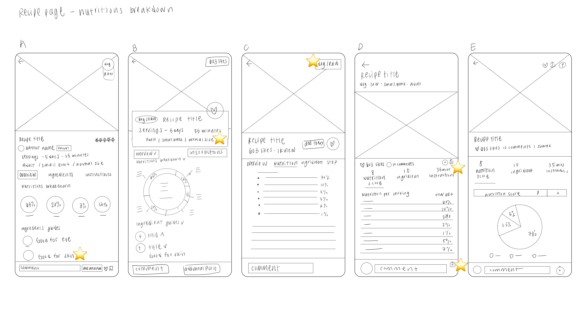

The Mea Sheer app enables pet owners to find nutriitious and appetizing meals for their beloved furry companions.

Introduction
During the UX design course offered by Google, I developed a project inspired by a social group of pet owners who enjoy cooking meals for their furry friends. Being a pet owner who also prepares meals for my dog, I found the topic intriguing and decided to delve deeper into it. As a result, I created an app that offers fresh and nutritious meal recipes along with a shopping list of ingredients. This app empowers pet owners to discover healthy and tasty meal options for their beloved pets.
My Role
My task as a UX designer is to design an app for Meal Sheer, a pet food recipe app, from start to finish. This involves conducting user research, designing wireframes and prototypes, collaborating with developers, testing, and iterating to create a visually appealing and user-centric app.
Team
Solo Designer
Timeline
September 2022 - November 2022
Deliverables
Conducting interviews
Wireframes
User Interface
Protoyping
Tools
Figma
Miro
Define
What's the problem?
Since pets have different nutritional needs than humans, fresh homemade meals should consist of high-quality ingredients and dietary requirements compared to processed foods such as kibble. As many as 87% of pet owners claim that their pet's dietary regimen is of utmost importance to them. However, pet owners often struggle to determine what constitutes good nutrition, ingredients, and sustainable food options for their pets.
Problem StatementPet food poses health risks to pets due to contamination, inadequate nutrients, allergies, mislabeling, and poor quality control. These risks can result in illness, malnutrition, allergies, and other health issues for pets.
Problem Discovery
Goal
Meal Sheer is a mobile app that assists pet owners in discovering healthy recipe options for their pets. Each recipe provides pet owners with all the relevant information necessary to make an informed decision before preparing a meal. Additionally, Meal Sheer serves as a platform for pet parents to share their ideas, thoughts, and questions with the community.
Research
Competitive Analysis
The Gap?
Put some text ...
Primary Research
Primary research
I conducted 5 user interviews to learn more about pet owners who cook for their pets or have cooked for their pets in the past 2 years.
What are the potential effects of feeding pets home-cooked meals on their overall health and well-being?
My objective in conducting these interviews was to better understand the target users and ensure that the design I create would fulfill their requirements, rather than catering solely to my own preferences.
Insights I gathered
1. Information
✨To make informed decisions about what to feed their pets, pet owners should educate themselves on the ingredients used in their pets' food and understand the principles of nutrition and how to balance it.
✨The quality and source of ingredients used in pet food can have a significant impact on a pet's overall health and wellbeing.
✨Pet owners are looking for a more personalized and targeted approach to recipe searching for their pets, based on specific needs and requirements.
✨Providing a filtering add-on for recipe searches can help pet owners easily find recipes that are tailored to their pets' individual needs, such as age, weight, and health conditions.
3. Guides
✨Providing a beginner's guide for new pet owners can help them feel more confident and prepared when it comes to caring for their new pet. This guide should cover topics such as nutrition, exercise, grooming, and basic training.
✨In addition to a beginner's guide, an expert support chat can be a valuable resource for pet owners who have more specific questions or concerns. This chat should be staffed by trained professionals, such as veterinarians or animal behaviorists, who can provide personalized advice and guidance.
From here, I revised problem statement:
Creating Persona
I chose to create a persona to ensure that I kept in mind the values of the user when designing. Based on my interviews with pet owners, it was clear that their top priority was the nutritional value of their pets’ diets. I also found that pet owners were willing to spend a significant amount of time cooking for their furry friends. Keeping these values in mind, I made it a priority to create a solution that aligned with their needs and preferences.
How Might We...
→ Design a solution that empowers pet owners with useful information about pet food recipes, enabling them to make informed choices about what to cook for their furry friends?
→ Alleviate the frustration of pet owners who are struggling with limited resources online, by creating a user-friendly and easily accessible platform for sharing information and resources?
→ Facilitate pet owners' connections with experts, or provide them with a better understanding of the nutritional value of different types of pet food, to help them make more informed decisions about what to feed their beloved pets?
Process
Creating a Framework
To get a high-level overview of the screens and visualize their navigation structure and hierarchy, I created a sitemap where I organized my ideas and sorted the main features and functionalities.
Sketches
To make it easier for users to understand the nutritional value of a recipe, I focused on creating five different wireframes that emphasize the nutrition breakdown area. In these wireframes, I simplified the nutrition facts by using graphic diagrams with percentages. The main goal was to create a user-friendly interface that presented the information in an easy-to-read format.
Lo-Fi Version One
To improve the user experience, I based the screen designs on feedback and findings from user research, which included identifying their pain points.
Lo-Fi Version Two
Taking into account the results of the usability study, I made some adjustments in my frist version wireframes.
1. A meal planning section has been incorporated for users to organize their meals.
2. A "share" button has been introduced on the "add new recipe" page.
3. Recipe type has been included for each recipe.
4. Nutrient breakdown has been presented in graphical format.
5. The menu now displays the total ingredient count and the number of times a meal needs to be prepared.

Testing
I conducted five usability tests to guarantee seamless navigation and completion of informational and instructional tasks by potential users of the app. Through the user testing, it became apparent that some areas required further clarity and additional information.
In order to refine the designs, I conducted two rounds of usability studies. The first round involved testing the designs using the initial version of the low-fidelity prototype. During the second study, the low-fidelity screen design was updated to the second version, although some areas still need refinement to enhance user experience.
Iterate
After conducting two rounds of usability studies, I updated the design to a high-fidelity prototype, incorporating the changes identified during testing.
Home Page
Changes Made
Search Page
Changes Made
Recipe Page
Changes Made
Add More Recipe
Changes Made